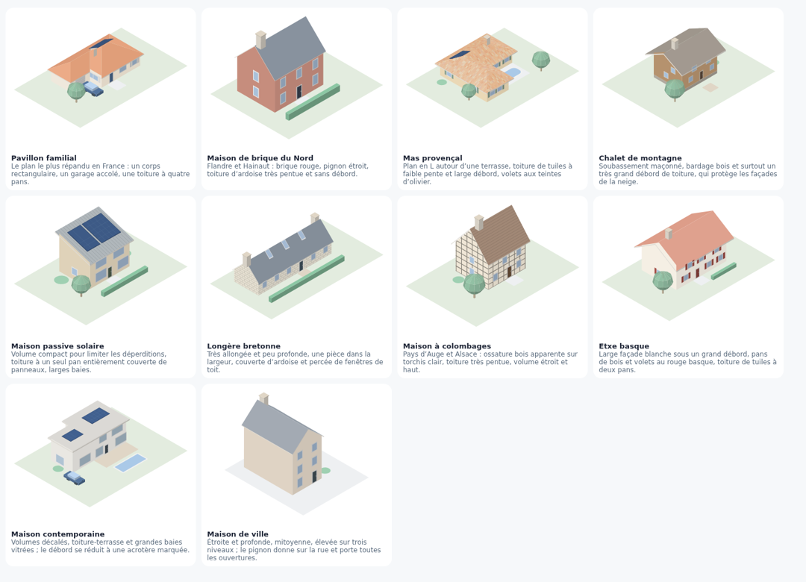
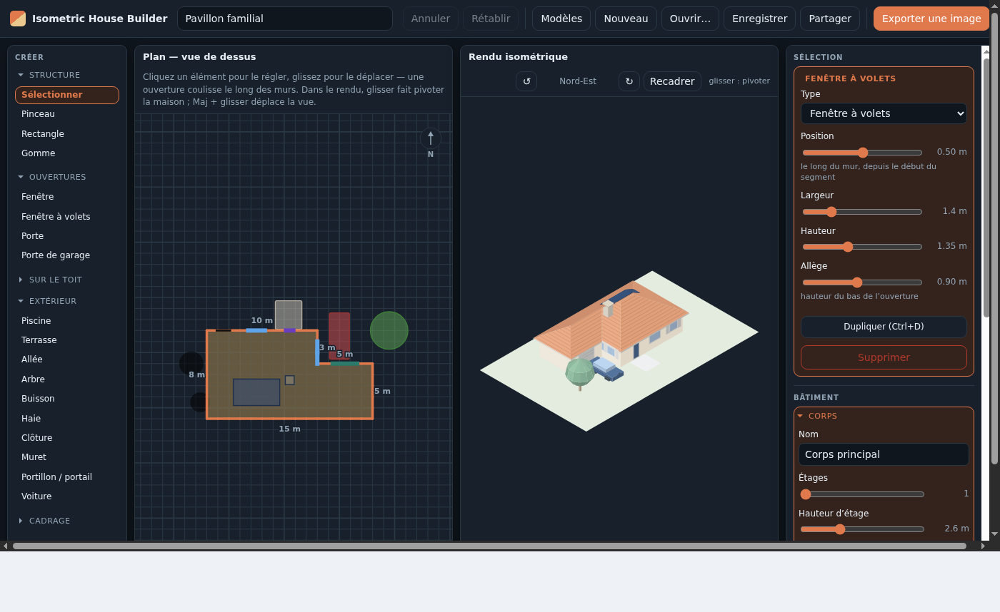
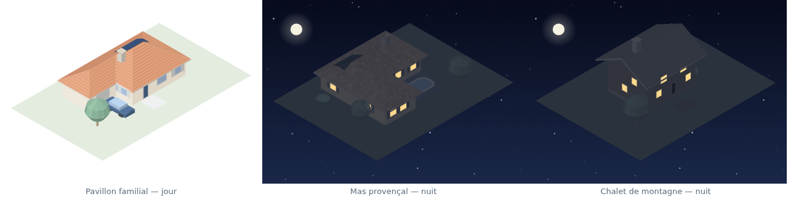
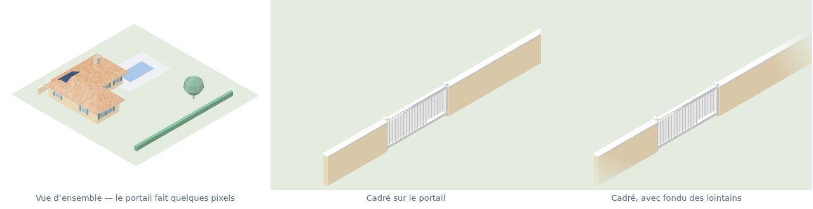

Guide de prise en main
Dessiner sa maison en vue isométrique et en sortir une image à poser sur un tableau de bord domotique. Tout se passe dans le navigateur : rien n’est envoyé nulle part, et il n’y a pas de compte à créer.
- Partir d’un modèle
- Les trois colonnes
- Dessiner l’emprise
- Régler la toiture
- Fenêtres, portes, objets de toit
- Plusieurs corps de bâtiment
- Les abords : muret, portail, piscine
- Couleurs et matières
- Regarder sa maison
- Cadrer sur une zone, pour un widget
- Exporter et poser dans Gladys
- Enregistrer, partager, confidentialité
- Raccourcis
1. Partir d’un modèle
L’outil s’ouvre sur une galerie de dix maisons plutôt que sur une grille vide. Prenez la plus proche de la vôtre et remodelez-la : c’est plus rapide que de partir de rien, et rien n’y est définitif. Le bouton Modèles rouvre la galerie à tout moment, et Page blanche reste disponible.

2. Les trois colonnes

- À gauche, créer. Les outils qui ajoutent quelque chose, rangés par familles qui se replient. Deux arrivent repliées — Sur le toit et Cadrage — parce qu’on les règle une fois.
- Au centre, dessiner et regarder. Le plan pour construire, le rendu pour juger et exporter.
- À droite, régler, en quatre familles : Sélection (ce qu’on vient de cliquer), Bâtiment, Projet, Vue et export. Chaque section se replie et indique ce qu’elle contient tant qu’elle est fermée.
3. Dessiner l’emprise
- Outil Rectangle : glissez dans le plan pour poser un volume. Les dimensions s’affichent pendant le tracé.
- Outil Pinceau pour ajouter case par case, Gomme pour retirer. Alt inverse l’outil.
- Chaque pan de mur affiche sa longueur : c’est ainsi qu’on cale les dimensions réelles sans compter les cases.
4. Régler la toiture
Section Toiture, à droite. Quatre formes — croupe, deux pans, appentis, toit plat — puis l’inclinaison, le débord et l’épaisseur de rive. Les noues entre deux ailes sont calculées toutes seules : dessinez un plan en L et le toit se raccorde.
Le débord se règle par pas de 25 cm, pour que la rive tombe sur la trame.
5. Fenêtres, portes, objets de toit
Choisissez Fenêtre, Fenêtre à volets, Porte ou Porte de garage, puis cliquez le long d’un mur — dans le plan ou directement sur le rendu. Une ouverture sélectionnée se règle (largeur, hauteur, allège) et se fait glisser le long des murs, en passant les angles.
Le réglage Renfoncement creuse une ouverture dans le mur — la porte-fenêtre en retrait, avec l’étage qui continue au-dessus. C’est de la vraie géométrie : le fond et les tableaux de la niche s’ombrent et se cachent correctement sous tous les angles.
Même chose pour ce qui se pose sur le toit : panneaux solaires, cheminée, fenêtre de toit, parabole. Ils épousent la pente.
6. Plusieurs corps de bâtiment
Un abri de jardin n’est pas la maison en plus petit : il a son toit plat et son bardage. Bouton + Nouveau corps dans Bâtiment → Tous les corps. Chaque corps a sa hauteur, sa toiture, ses matières et ses couleurs propres.
Cliquer un mur ou un toit dans le rendu rend son corps actif — pratique pour passer de l’un à l’autre sans repasser par le plan.
7. Les abords : muret, portail, piscine
Muret, clôture et haie se tracent au glisser, leur longueur s’affichant pendant le tracé. Un portail posé près d’un muret s’y aligne et l’ouvre automatiquement — il n’y a pas de relation à maintenir entre les deux, déplacez-le et le muret se referme derrière lui.
Terrasses et piscines peuvent être surélevées, jusqu’à 3 m : elles reçoivent alors leurs joues et cessent d’être confondues avec le sol. Sur un terrain en pente, c’est ce qui pose une terrasse au niveau de l’étage, le garage s’ouvrant en dessous — le terrain lui-même reste plat.
8. Couleurs et matières
Section Projet → Apparence pour la palette, Couleurs et matières pour le reste. Six palettes, des matières de toit (tuiles, tuiles canal panachées, ardoise, bac acier) et de murs (brique, bardage, pierre, colombages), puis chaque matériau recolorable individuellement.
9. Regarder sa maison
Glissez dans le rendu pour faire tourner la maison, où qu’on la prenne. Le pavé en bas à droite fait la même chose au clic, et bascule entre Pivoter et Déplacer — les flèches suivent ce choix, et les maintenir enfoncées répète le pas.
| Geste | Effet |
|---|---|
| Glisser | Faire tourner la maison, et monter ou descendre la caméra |
| Maj + glisser | Déplacer la vue |
| Alt + glisser | Incliner l’image dans son cadre |
| Molette | Zoomer autour du curseur |
| [ ] | Tourner d’un quart de tour |
La section Vue donne les mêmes réglages au degré près, et + Enregistrer cette vue garde un angle et un cadrage sous un nom, pour y revenir et le réexporter plus tard.
Une case Vue de nuit dans Apparence fait passer l’illustration à la nuit : ciel étoilé, lune, et les fenêtres allumées — ce qui, sur un tableau de bord, dit si la maison est éveillée.

10. Cadrer sur une zone, pour un widget
Un widget qui pilote un seul appareil ne gagne rien à montrer toute la propriété : le portail y fait quelques pixels. L’outil Zone de cadrage (dernière famille, à gauche) trace un rectangle sur le plan ; l’export s’y recadre.

Ce qu’il faut savoir :
- Ce qui est hors zone est retiré, pas seulement mis hors champ. En isométrie, un abri au fond du jardin se projette vers le haut, en plein dans un cadre serré sur le portail.
- Ce qui traverse la zone y est coupé ; ce qui est compact — un arbre, un portail — est gardé entier ou retiré selon que son centre tombe dedans.
- Un corps de bâtiment n’est gardé que s’il se tient dans la zone. Une maison dont le mur longe la zone ne l’effleure que d’un centimètre : elle disparaît. Étendez la zone d’un mètre ou deux sur le bâtiment pour le garder.
- La marge est de l’air autour du dessin, pas de la pelouse en plus. Un ou deux mètres suffisent en général.
- Rien n’est coupé par le bord de l’image : la caméra cadre le dessin entier. Chaque zone donne donc une illustration complète, et une maison peut porter autant de cadrages que de widgets.
11. Exporter et poser dans Gladys
- Exporter une image, en haut à droite (ou le bouton au pied de la section Cadrage).
- Taille Gladys — 2560 × 1600, format PNG, fond transparent.
- Dans Gladys : ajoutez un widget Vue de la maison, téléversez l’image, puis cliquez dessus pour poser vos pastilles liées aux appareils.
Les autres sorties : Les 4 faces produit les quatre orientations en un lot, Vues enregistrées régénère toutes vos vues nommées d’un coup, et SVG donne du vectoriel éditable. Rien n’oblige à passer par le widget Vue de la maison : une simple carte Image convient, et l’export reste du PNG ordinaire pour Home Assistant, Jeedom ou un wiki.
12. Enregistrer, partager, confidentialité
Rien ne quitte votre navigateur. L’outil n’envoie aucune requête : pas de compte, pas de serveur, pas de mesure d’audience. Le projet en cours est gardé dans le stockage local de votre navigateur, sur votre machine. Quelqu’un qui ouvre le lien de l’outil arrive sur la galerie de modèles et ne voit rien de ce que vous avez dessiné.
- Enregistrer produit un fichier
.house.jsonlisible et versionnable, qu’Ouvrir relit. - Partager copie un lien qui contient tout le projet dans son adresse. Pratique pour envoyer une maison à quelqu’un — et à ne pas confondre avec le lien de l’outil si vous ne souhaitez pas montrer la vôtre.
- Nouveau repart d’une page blanche et efface le projet conservé localement.
13. Raccourcis
| Touche | Effet |
|---|---|
| Ctrl+Z / Ctrl+Maj+Z | Annuler, rétablir |
| Ctrl+D | Dupliquer la sélection |
| Suppr | Supprimer la sélection |
| Échap | Désélectionner |
| [ ] | Tourner d’un quart de tour |